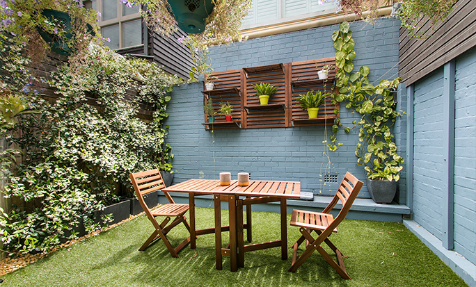
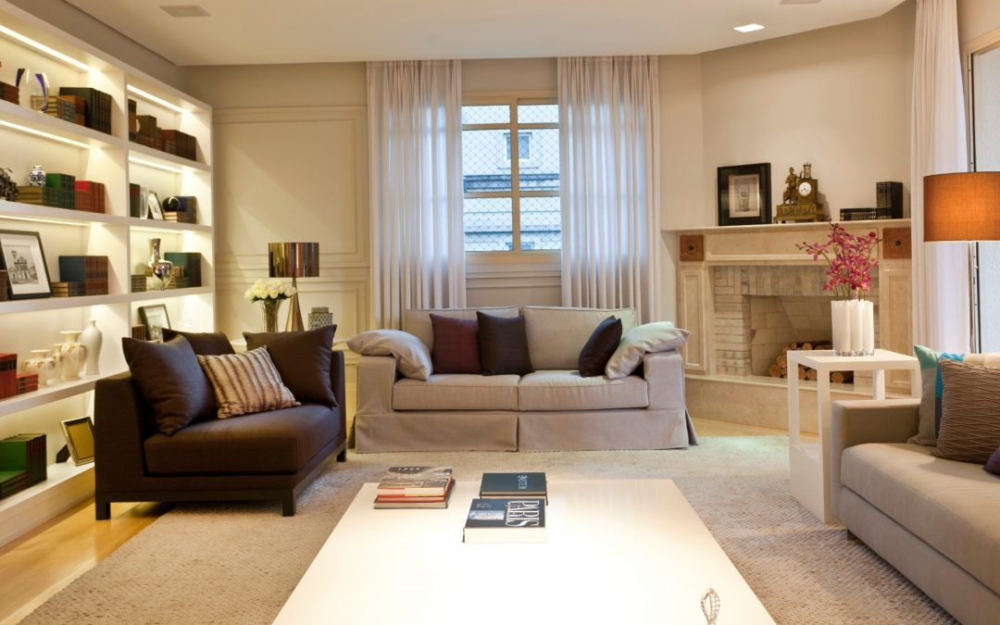
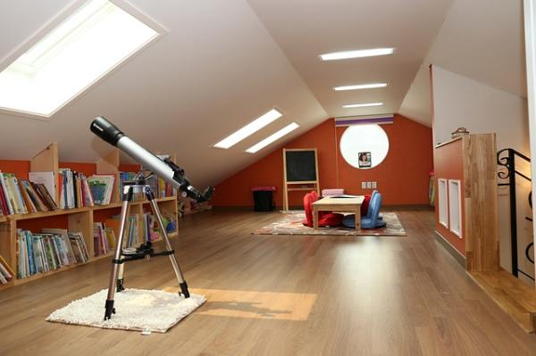

Interiores
En este apartado se puede solicitar servicios como diseño y decoración de espacios, renovación y remodelación de ambientes al interior del hogar, selección de mobiliario y accesorios, asesoría en distribución y funcionalidad de las áreas, así como solicitar la creación de proyectos personalizados que reflejen el estilo y necesidades del cliente.
PROVEEDOR: Promart Homecenter, una tienda con todo lo que necesitas para mejorar tu casa: Materiales de construcción, acabados, organización, decoración, herramientas, muebles e iluminación.
Servicios

Exteriores
En este apartado se pueden solicitar servicios como diseño y paisajismo del jardín, selección y colocación de plantas y flores, creación de espacios de descanso como terrazas, patios o zonas de barbacoa, y asesoría en la elección de muebles de exterior. También se puede pedir recomendaciones para la iluminación exterior, diseño de senderos y pavimentos, todo con el objetivo de crear un ambiente agradable y funcional al aire libre.
PROVEEDOR: Sodimac, una tienda especializada en productos del hogar. Ofrece varios productos de renovación y decoración para el hogar.
Servicios

Sala de estar
En este apartado se pueden solicitar servicios como diseño y decoración del espacio, selección de muebles cómodos y funcionales, recomendaciones de colores y materiales, y optimización de la iluminación. Además, se puede pedir asesoría para la distribución de los muebles, la elección de accesorios decorativos como cojines y alfombras, y la creación de un ambiente acogedor y estilizado para disfrutar y recibir visitas.
PROVEEDOR: CasaLinda, es una empresa 100% peruana que ofrece productos para el mejoramiento de hogar, oficina y negocio, por medio de la venta al por mayor y menor de productos nacionales e importados de la mejor calidad.
Servicios

Áticos
En este apartado se pueden solicitar servicios como diseño y decoración de estos espacios, aprovechamiento de la luz natural mediante ventanas y tragaluces, y creación de áreas funcionales como dormitorios, oficinas o salas de estar. También se puede pedir asesoría para elegir muebles adecuados para techos bajos, soluciones para almacenamientos óptimos y recomendaciones de materiales, se puede solicitar la creación de proyectos personalizados que reflejen el estilo y necesidades del cliente.
PROVEEDOR: Cosas & Hogar , nos dedicamos a la comercialización de productos originales, de diseño y útiles para tu casa y oficina. Tenemos todo lo que puedas necesitar en artículos de menaje y utensilios de cocina y mesa, accesorios para el baño, pequeño mobiliario y productos de decoración para sala, comedor y dormitorio.
Servicios

Baños y limpieza
En este apartado se pueden solicitar servicios como diseño y remodelación de baños, selección de accesorios y muebles, elección de materiales y acabados para suelos y paredes, y optimización del espacio para mayor funcionalidad. Además, se puede pedir asesoría para la iluminación adecuada, sistemas de ventilación y se puede solicitar la creación de proyectos personalizados que reflejen el estilo y necesidades del cliente.
PROVEEDOR: Promart Homecenter, una tienda con todo lo que necesitas para mejorar tu casa: Materiales de construcción, acabados, organización, decoración, herramientas, muebles e iluminación.
Servicios

Cocina
En este apartado se pueden solicitar servicios como diseño y remodelación completa de cocinas, optimización de la distribución de espacios, elección de materiales y acabados para las encimeras, suelos y armarios. Además, se puede pedir asesoría para tener una iluminación adecuada, y recomendaciones para el mobiliario, todo con el objetivo de crear una cocina práctica, estética y cómoda para cocinar.
PROVEEDOR: Casa Ideas, una tienda con todo lo que necesitas para mejorar tu cocina. Ofrece una gran cantidad de productos, desde utensilios de cocina hasta muebles.
Servicios